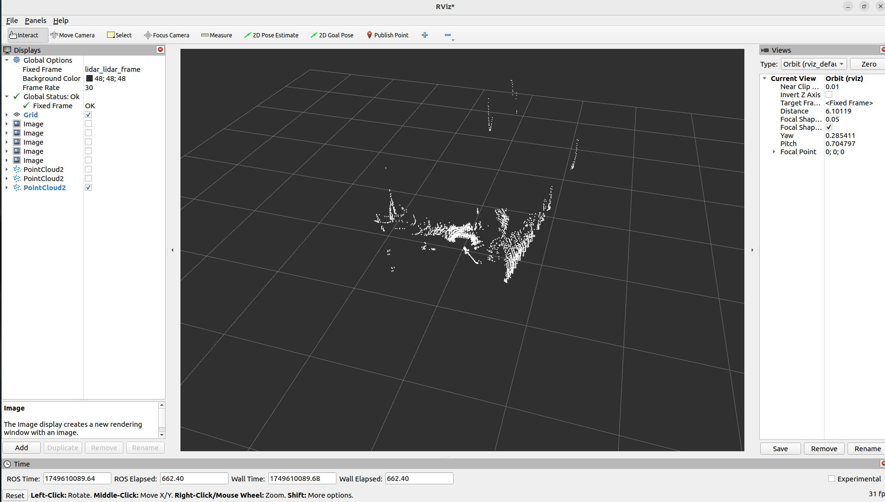
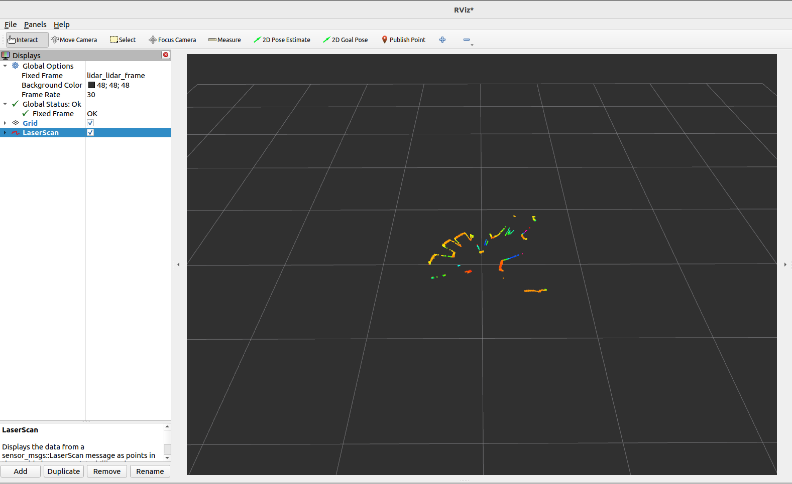

此 ROS1 驱动程序支持您使用 Orbbec 单线/多线激光雷达。本文档提供安装说明、使用指南和其他重要信息，帮助您快速开始使用此驱动程序。
1. 安装
1.1. 先决条件
在使用 OrbbecSDK ROS1 激光雷达驱动程序之前，请确保您的系统上安装了以下依赖项：
ROS1: 有效安装 ROS1（Melodic、Noetic 或其他受支持的发行版）。
如果您需要帮助，请参阅 ROS1 安装指南。
1.2. 安装依赖项
# 假设您已经配置了 ROS 环境
sudo apt install libgflags-dev nlohmann-json3-dev
1.3. 安装 udev 规则
cd ~/catkin_ws/src/orbbec-ros-sdk/scripts
sudo bash install_udev_rules.sh
sudo udevadm control --reload-rules && sudo udevadm trigger
1.4. 构建包
cd ~/catkin_ws/
# 构建发布版本，默认为调试版本
catkin_make -DCMAKE_BUILD_TYPE=Release
1.5. 启动激光雷达节点
第一个终端
source devel/setup.bash
roslaunch orbbec_camera lidar.launch
第二个终端
source devel/setup.bash
rviz
打开 RViz。
添加
PointCloud2或LaserScan显示。对于
PointCloud2，选择/lidar/cloud/points话题；对于LaserScan，选择/lidar/scan/points话题。将
Fixed Frame设置为lidar_lidar_frame以正确对齐数据。
PointCloud2可视化示例：

LaserScan可视化示例：

2. 使用方法
2.1. 运行驱动程序
要启动驱动程序，请启动提供的 ROS1 启动文件：
source devel/setup.bash
# 启动带有点云数据的驱动
roslaunch orbbec_camera lidar.launch lidar_format:=LIDAR_POINT
# 启动带有球面点云数据的驱动
roslaunch orbbec_camera lidar.launch lidar_format:=LIDAR_SPHERE_POINT
# 启动带有激光扫描数据的驱动
roslaunch orbbec_camera lidar.launch lidar_format:=LIDAR_SCAN
# 启动启用IMU的驱动
roslaunch orbbec_camera lidar.launch enable_imu:=true imu_rate:=50hz
# 启动同时包含点云和IMU数据的驱动
roslaunch orbbec_camera lidar.launch lidar_format:=LIDAR_POINT enable_imu:=true imu_rate:=100hz
此命令将启动与奥比中光激光雷达设备接口的节点。请确保在运行此命令之前正确连接激光雷达硬件。
2.2. 获取已连接设备信息
rosrun orbbec_camera list_devices_node
此命令将列出已连接的激光雷达设备并显示其各自的IP地址和端口。您可以使用此信息配置驱动以连接到特定设备。
2.3. 检查支持的配置
rosrun orbbec_camera list_camera_profile_mode_node
2.4. 参数和配置
lidar.launch 文件包含驱动的默认参数。您可以通过修改启动文件或创建自定义配置文件来自定义这些设置。关键参数包括：
device_type: 要启动的设备类型。可选值：
lidar、camera。将此参数设置为lidar启动激光雷达设备，设置为camera启动摄像头设备。camera_name: 启动节点命名空间。
device_num: 设备数量。如果需要启动多个设备，则必须填写此项。
upgrade_firmware: 固件升级功能。输入参数是固件路径。
connection_delay: 重新打开设备的延迟时间（毫秒）。在热插拔期间立即重新打开设备可能导致固件崩溃。
publish_tf: 启用TF发布。
tf_publish_rate: TF发布频率。
lidar_format: 激光雷达的数据格式。可选值：
LIDAR_POINT、LIDAR_SPHERE_POINT、LIDAR_SCANlidar_rate: 激光雷达的扫描频率。
publish_n_pkts: 发布合并数据前累积的帧数量。范围：1-12000。仅在激光雷达格式为
LIDAR_POINT或LIDAR_SPHERE_POINT时有效，用于累积指定数量的帧后再发布合并的点云数据。默认值：1enable_scan_to_point: 启用扫描数据到点云数据的转换，发布PointCloud2数据类型话题。
repetitive_scan_mode: 重复扫描模式参数。
filter_level: 过滤级别参数。
vertical_fov: 垂直角度参数。
min_angle: 激光雷达扫描范围的最小角度（度）（例如，
-135.0）。默认值：-135.0max_angle: 激光雷达扫描范围的最大角度（度）（例如，
135.0）。默认值：135.0min_range: 激光雷达可测量的最小距离（米）。默认值：
0.05max_range: 激光雷达可测量的最大距离（米）。默认值：
30.0echo_mode: 激光雷达的回波模式。可选值：
Last Echo、First Echoenumerate_net_device: 启用网络设备的自动枚举。
net_device_ip: 网络设备的IP地址。
net_device_port: 网络设备的端口号。
log_level: SDK日志级别，默认值为
none，可选值为debug、info、warn、error、fataltime_domain: 设备的时间戳类型。可选值为
device、global、systemenable_heartbeat: 启用心跳功能，默认为
false。如果设置为true，相机节点将向固件发送心跳信号；如果需要硬件日志记录，也应将其设置为true。enable_imu: 启用IMU（加速度计+陀螺仪）并输出统一的IMU话题数据。
imu_rate: IMU的统一频率（加速度计和陀螺仪）。
accel_range: 加速度计的量程。
gyro_range: 陀螺仪的量程。
linear_accel_cov: 线性加速度协方差值，默认为
0.0001。angular_vel_cov: 角速度协方差值，默认为
0.0001。
3. 点云数据详细说明
3.1. 点云格式
PointCloud2 (PointXYZITO) 点云格式如下：
float32 x # X轴，单位：米
float32 y # Y轴，单位：米
float32 z # Z轴，单位：米
uint8 intensity # 激光雷达强度
uint8 tag # 激光雷达标签
uint32 offset_time # 点云相对话题时间的偏移量，单位纳秒
3.2. 点云聚合功能
通过 publish_n_pkts 参数可以开启点云聚合功能，该功能允许激光雷达在发布数据前累积指定数量的帧，然后将这些帧合并为一个更大的点云数据包进行发布。
3.2.1. 功能特点：
参数范围: 1-12000 帧
适用格式: 仅在激光雷达格式为
LIDAR_POINT或LIDAR_SPHERE_POINT时有效默认值: 1（即不聚合，每帧单独发布）
用途: 提高点云密度，适用于需要更密集点云数据的应用场景
3.2.2. 使用示例：
# 聚合10帧数据后发布
roslaunch orbbec_camera lidar.launch lidar_format:=LIDAR_POINT publish_n_pkts:=10
# 聚合100帧数据后发布
roslaunch orbbec_camera lidar.launch lidar_format:=LIDAR_SPHERE_POINT publish_n_pkts:=100
注意: 增加 publish_n_pkts 值会提高点云密度，但同时会增加延迟和内存使用量，请根据实际应用需求进行调整。
4. IMU数据
4.1. IMU话题
启用IMU时，将发布以下话题：
/lidar/imu/sample: 统一的IMU话题，包含sensor_msgs/Imu格式的同步加速度计和陀螺仪数据。/lidar/lidar_to_imu: 从激光雷达坐标系到IMU坐标系的变换关系。
4.2. 使用IMU数据
要启用IMU数据采集：
# 启动并启用IMU
roslaunch orbbec_camera lidar.launch enable_imu:=true imu_rate:=50hz
# 检查IMU话题
rostopic list | grep imu
# 查看IMU数据
rostopic echo /lidar/imu/sample
IMU数据包括：
linear_acceleration: 3D加速度数据（x、y、z），单位：m/s²
angular_velocity: 3D角速度数据（x、y、z），单位：rad/s
orientation: 四元数方向（硬件不提供，设置为零）